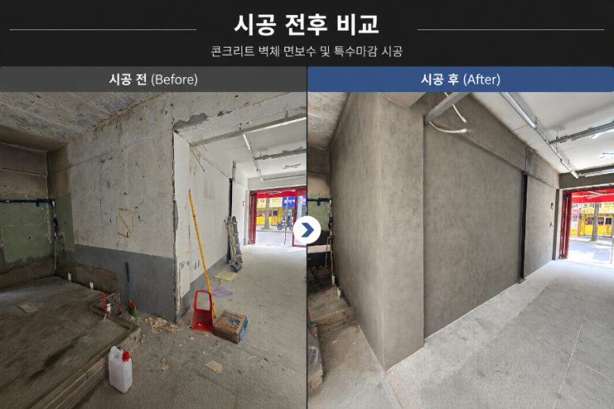
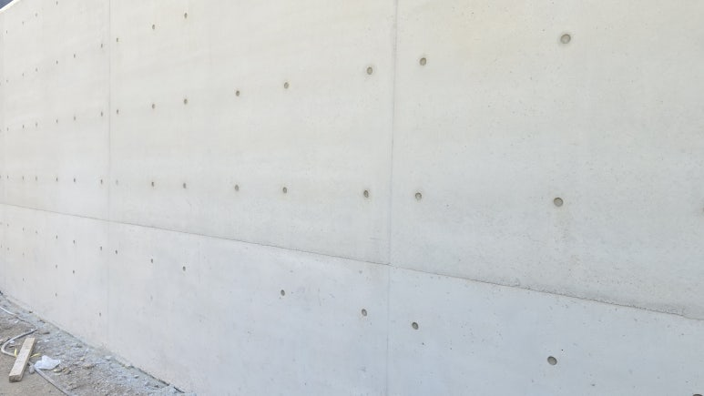

BEFORE / AFTER송파 오픈예정 식당 인더스트리얼 콘채 빈티지 벽체 시공송파 지역 식당 오픈 준비 현장에서 이질재료 벽체를 올퍼티·다단계 콘채뿜칠로 인더스트리얼 빈티지 벽체로 완성한 사례. 자재·공구 목록과 9단계 공정을 상세 기록.
REPAIR & WATERPROOFING MATERIALS
보수 · 방수 자재
저희가 현장에서 실제로 쓰는 자재입니다. 시공 없이 자재만 필요하신 경우에도 구매하실 수 있습니다.
재료를 고르는 기준은 “무엇을 채우는가”가 아니라 “무엇이 남는가”입니다.
노출콘크리트는 마감이 덮어주지 않기 때문에, 수축률이 큰 충전재나 은폐력이 강한 마감재를 쓰면 그 흔적이 몇 달 뒤 그대로 드러납니다. 아래 자재는 저희가 제주와 육지 현장에서 반복해 쓰면서 결과를 확인한 것들입니다.
MATERIALS
취급 자재
현장 조건에 따라 배합과 희석비가 달라집니다. 어떤 상태의 면인지 알려주시면 맞는 제품을 안내해 드립니다.
-
01
노출콘크리트 보수재
곰보 · 기포 · 층조인트 단차 충전용 폴리머 모르타르와 퍼티류. 얇게 여러 번 나눠 채울 수 있는 작업성과 낮은 수축률을 기준으로 고릅니다.
-
02
색상 · 질감 재현 마감재 (콘채)
노출콘크리트 면보수 뒤 색보정에 쓰는 라이트그레이 · 미들그레이 · 아이보리 등 콘채 계열 마감재와 안료. 바탕의 결이 비쳐 보이도록 채도와 희석비를 현장에서 맞춰 씁니다.
-
03
누수 인젝션재
활수 구간 1차 차수용 발포형 우레탄과, 미세 누수 마무리용 저점도 우레탄 · 에폭시. 패커 등 부자재를 함께 준비합니다.
-
04
액상고무 방수재
드레인 주변, 관통부, 파라펫 코너처럼 형상이 복잡한 부위를 이음매 없이 마감하는 도막방수재와 보강포.
-
05
침투형 발수제 · 표면 보호재
표면에 막을 만들지 않고 물만 튕겨내는 실란 · 실록산계 발수제. 해안가 현장은 재도포 주기를 짧게 계획하는 편이 좋습니다.
BEFORE YOU BUY
구매 전
확인해 주세요
같은 제품이라도 바탕면 상태에 따라 결과가 크게 달라집니다.
- 바탕면 상태들뜸 · 함수율 · 기존 도장 유무
- 노출 조건실내 · 외벽 · 해안가 · 보행부
- 목표 색상인접 면 기준 · 건조 후 확인
- 시공 면적소요량과 로트 통일
자주 받는 질문
- 같은 제품을 썼는데 왜 결과가 다른가요?
- 바탕면 상태가 다르기 때문입니다. 들뜸과 함수율, 기존 도장 유무에 따라 같은 제품도 다르게 발현됩니다. 어떤 상태의 면인지 알려주시면 맞는 제품을 안내해 드립니다.
- 은폐력이 좋은 재료를 쓰면 더 깔끔하지 않나요?
- 노출콘크리트에서는 반대입니다. 마감이 덮어주지 않기 때문에, 수축률이 큰 충전재나 은폐력이 강한 마감재를 쓰면 그 흔적이 몇 달 뒤 그대로 드러납니다. 바탕의 결이 비쳐 보이도록 채도와 희석비를 현장에서 맞춰 씁니다.
- 해안가 현장도 같은 발수제를 쓰나요?
- 제품은 같은 실란 · 실록산계 침투형 발수제를 쓰되, 계획이 다릅니다. 해안가 현장은 재도포 주기를 짧게 계획하는 편이 좋습니다.
APPLIED WORKS
이 자재로
시공한 현장
배합비와 공정 순서까지 사례에 그대로 적어 두었습니다.
TECHNICAL NOTES
재료를 고르는 기준
같은 제품이라도 바탕면 상태에 따라 결과가 달라집니다. 무엇을 기준으로 고르는지 정리해 두었습니다.